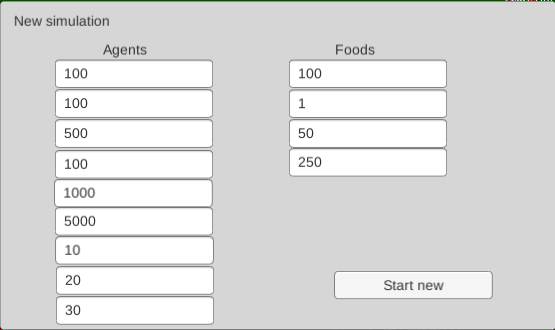
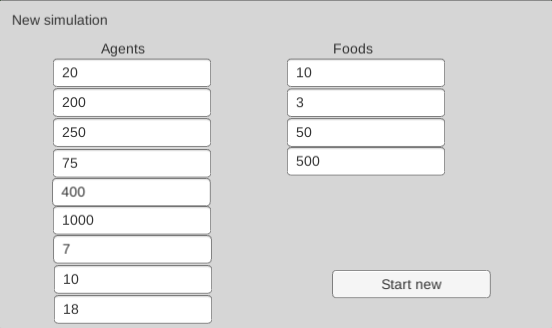
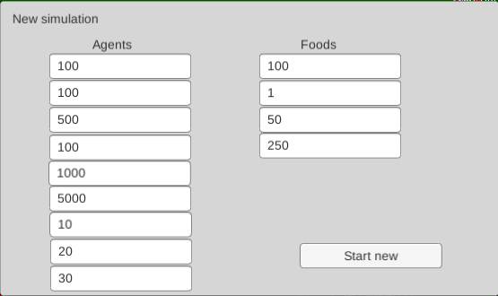
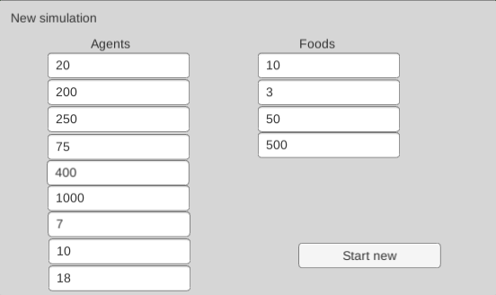

Breitenberg - Assignment 2 - Emergence
For this assignment I improved on the implementation of breitenberg vehicles which can be seen on Link. The Unity code for this project can be downloaded at Download.
To achieve this behaviour I introduced some parameters which each red bird takes action based on along with some parameters of the environment, these parameters can be tweaked. The parameters are as follows:
The red birds have a simple control sequence and it as as follows:
These groups have an emergent property where as they grow they become more likely to either die out or to be split into smaller groups. While smaller groups can have a hard time getting any food, so the groups even out in sizes over time.

Second setup I found to be fun was as follows. I find it interesting because it puts the groups into a very rough situation and every now and then you get one or two groups that are extremely successful while all other groups die out.

Many other interesting setups were fun, but I'll let the reader play around now.
Introduction
This iteration of the assignment wanted us to explore the concept of emerging properties of a simple system. We were to do it in an environment where our agents exhibit breitenberg vehicle behaviour. I do this by having red birds act as breitenberg vehicles and blue birds act as entities that the red birds are attracted to.Agents
The red birds in this iteration have two objects that they are attracted to, they drive towards blue birds that are food and if they can not find any food close by they drive to a close by red bird. Doing this the red birds are similar to pack/herd animals.To achieve this behaviour I introduced some parameters which each red bird takes action based on along with some parameters of the environment, these parameters can be tweaked. The parameters are as follows:
| Parameter Name | Parameter Description |
|---|---|
| Agents | Represent the amount of red bird spawn in a simulation. |
| Agent think | Represent the amount of frames it takes for a bird to respond to input. |
| Initial hunger | Represent the hunger level each bird starts with. |
| Hunger deter | Represent the amount of hunger level a bird loses every H-deter time. |
| H-deter time | Represent the amount of frames it takes for a bird to lose one hunger deter of hunger level. |
| Full breakpoint | Represent the amount of hunger level it takes for a bird to become full so it can rest. |
| Vision field | Represent the distance a bird can see, be that for food or other red birds. |
| Min speed | Represent the minimum speed a bird can travel. |
| Max speed | Represent the maximum speed a bird can travel. |
| Initial foods | Represent the initial amount of foods on the ground. |
| Food spawn rate | Represent the seconds it takes for a new food to appear. |
| Food deter | Represent the food level that is lost each F-deter time for the food. |
| F-deter time | Represent the amount of frames it takes for a food to lose Food deter many food levels. |
- The red birds go towards the closes food they can find.
- If there is no such food within their vision range they look for the closest red bird and go to them.
- If no such red bird is found the bird just stays put until a better opportunity arises.
- If a bird has eaten enough food to go beyond his Full breakpoint he essentially sleeps in the position he is in until he has become hungry again.
- The speed of a bird is determined by how full he is, i.e. the more he has eaten the more energetic he becomes.
- If a red bird eats something he shares it evenly between any bird within his vision range.
Emergent properties
Properties that naturally arise from this system are for instance that the birds generally form groups that all have a similar hunger score and therefore a similar speed. The stronger of these groups tend to survive much longer than the weaker. These bird groups also seem to have a philosophy opposite to the "no man left behind" principle. Because if a weak bird is within a strong group he is left behind by the faster birds in the group, and only those faster birds share the food, since the food is shared by the bird that ate the food only with the birds in his vision range.These groups have an emergent property where as they grow they become more likely to either die out or to be split into smaller groups. While smaller groups can have a hard time getting any food, so the groups even out in sizes over time.
Details
In this webgl client the simulation can be played. The simulation has these parameters by default but the parameters can be tweaked by clicking the "New simulation" button. It is not required to tweak every parameter, if one is omitted the default value will be used.| Parameter Name | Default Value |
|---|---|
| Agents | 20 |
| Agent think | 100 |
| Initial hunger | 250 |
| Hunger deter | 25 |
| H-deter time | 700 |
| Full breakpoint | 1500 |
| Vision field | 7 |
| Min speed | 15 |
| Max speed | 25 |
| Initial foods | 10 |
| Food spawn rate | 1 |
| Food deter | 15 |
| F-deter time | 400 |
Interesting parameter setups
First setup I found to be interesting was only really interesting to me because it is visual and looks fluid-like.
Second setup I found to be fun was as follows. I find it interesting because it puts the groups into a very rough situation and every now and then you get one or two groups that are extremely successful while all other groups die out.

Many other interesting setups were fun, but I'll let the reader play around now.